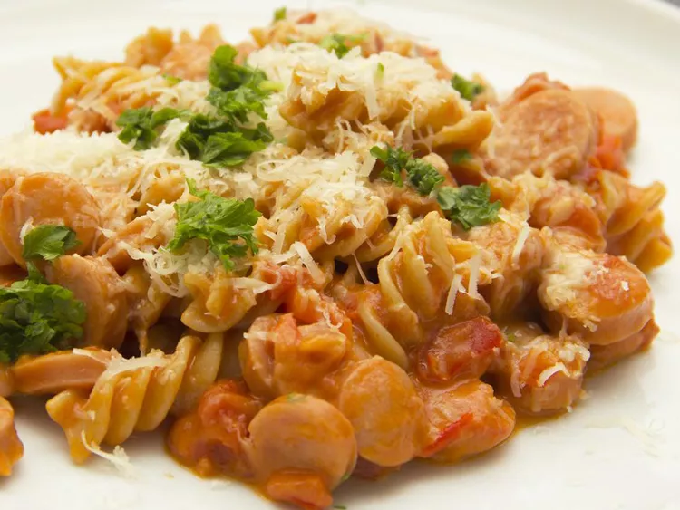

Cheesy Sausage Pasta

Delicious Cheesy Sausage Pasta!
This delicious cheesy sausage pasta dish has a tomato cream sauce. It's like macaroni for grown-ups!
Ingredients
- 1 (16 ounce) package uncooked pasta shells
- 1 tablespoon vegetable oil
- ½ tablespoon finely minced onion
- 1 orange bell pepper, thinly sliced
- 1 teaspoon minced garlic
- 1 pound bulk Italian sausage
- 1 (14.5 ounce) can stewed tomatoes
- 1 cup heavy cream
- 1 cup grated Parmesan cheese
- 1 tablespoon chopped fresh parsley
Steps
- Fill a large pot with lightly salted water and bring to a rolling boil over high heat. Stir in pasta and return to a boil. Cook, stirring occasionally, until cooked through but still firm to the bite, about 13 minutes; drain.
- Meanwhile, heat vegetable oil in a large skillet over medium-high heat. Add onion, orange pepper, and garlic; cook and stir until tender, about 5 minutes. Stir in Italian sausage; cook and stir until browned and cooked through, about 8 minutes. Stir in undrained tomatoes and heavy cream; reduce heat to medium-low and cook 5 minutes more.
- Mix pasta into sauce; stir in the Parmesan cheese and garnish with fresh parsley.